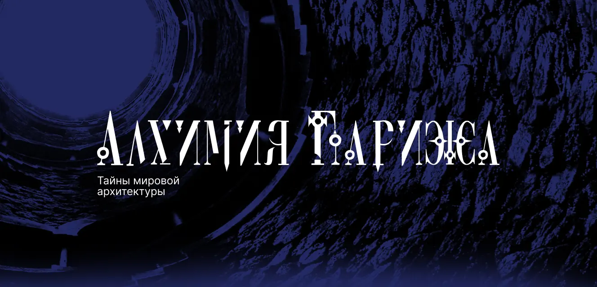
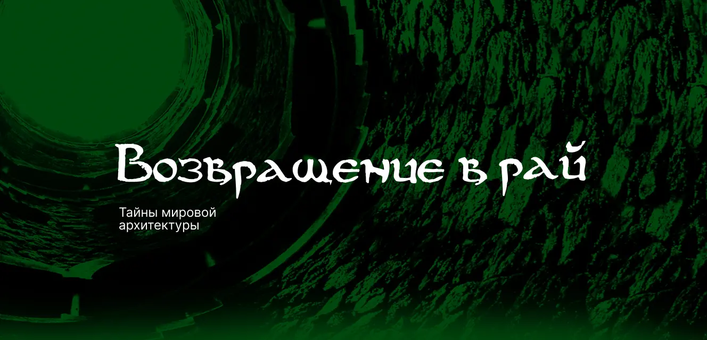
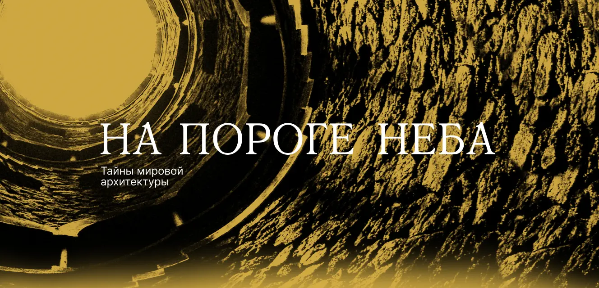
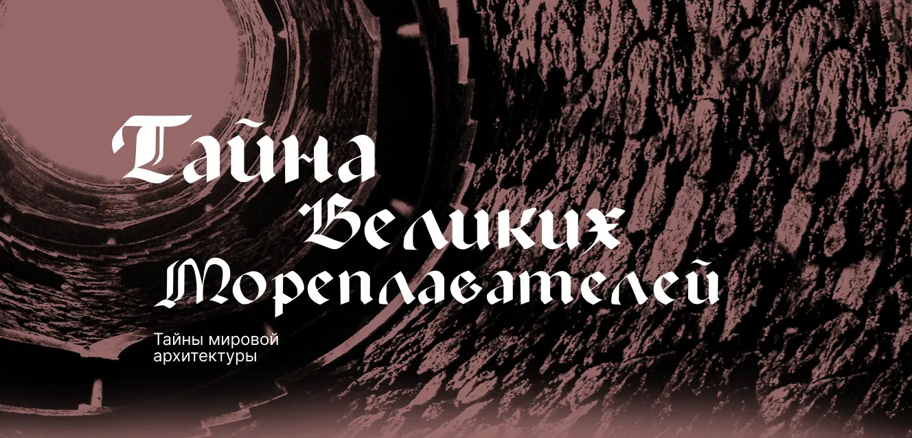
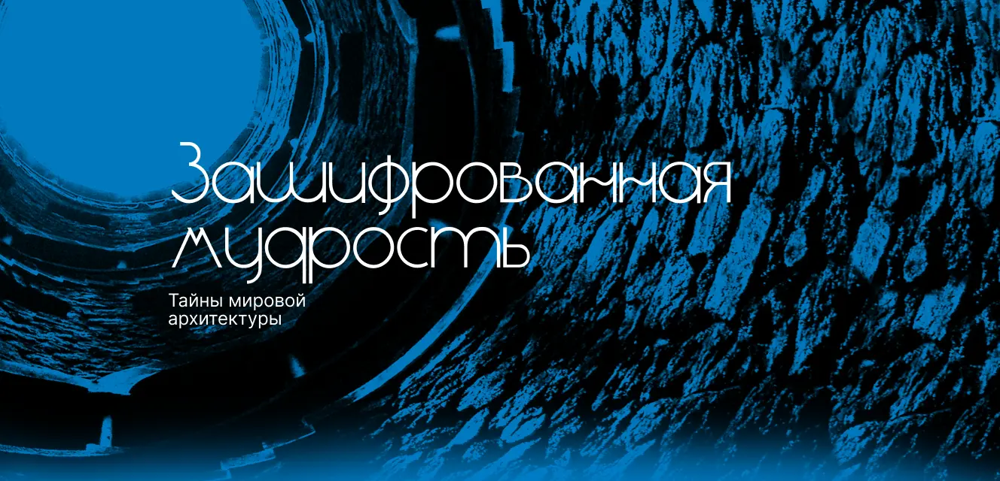
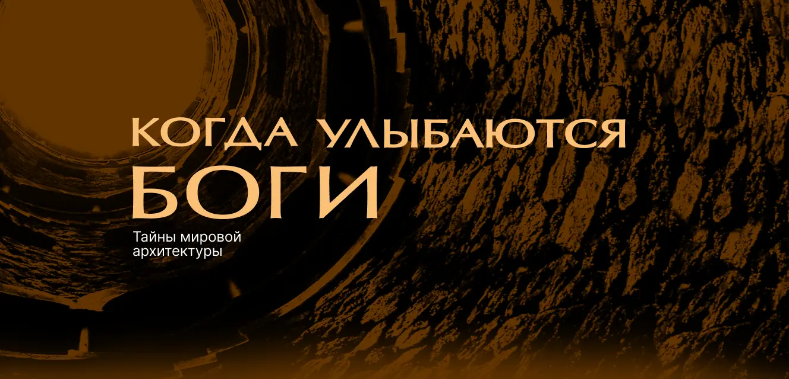

Тайны
мировой
архитектуры
«Тайны мировой архитектуры» — это самые загадочные и значительные явления в истории человечества, это судьбы людей, это великие тайны великих цивилизаций, неожиданно открывающиеся для нас через призму архитектуры. Дворцы и храмы, затерянные в пространстве и времени города... Восемь фильмов. Каждый из которых — откровение.
Вольные каменщики • Алхимия Парижа • Возвращение в рай • На пороге неба • Тайна великих мореплавателей • Загадки великого Сфинкса • Зашифрованная мудрость • Когда улыбаются Боги
Задача проекта — разработать дизайн упаковки и дисков для всех 8 фильмов в подарочном издании
Вольные
каменщки
В средние века так называли строителей. «Free Massons» – одни из самых загадочных в мире людей. Их присутствие чувствуется везде но, нигде не бывает явным.


Алхимия Парижа
Тот кто разгадает значение символических барельефов, сможет превращать обычные металлы в золото, исцелять болезни и останавливать время.



Возвращение в рай
Грубо отесанные камни, даже подчеркнуто грубые, шероховатые, теплые. Вот оно, сердце Дамаска. Живое сердце. Джамия Аль Умейи. Большая мечететь Омейядов.


На пороге неба
«И свет во тьме светит,
и тьма не объяла его»
От Иоанна, 1.


Тайна великих
мореплавателей
«Одежды носить белые, избегать ропота и поцелуя всех женщин»... Из Устава Ордена «Бедных рыцарей и храма Соломона», сокращенно «храмовники». Тамплиеров. «Tample» с французского переводится как «храм».

Загадки Великого Сфинкса
Жители Барселоны клянутся, что в день, когда его хоронили, плакали камни. А дома которые он построил, скорбно склонили башни. Но одних слухов недостаточно, что бы заинтересовать Ватикан. Значит в этой истории есть что то еще...


Зашифрованная мудрость
Говорят, что сверху это похоже на крест. Или на самолет. Но многие утверждают, что священная птица Ибис, которая в древнем Египте символизировала Тота – бога правосудия и мудрости.


Когда улыбаются Боги
Ангкор. Таинственный город. Древняя легенда гласит, что ни одно не обходилось в Ангкоре без вмешательства богов. Их присутствие ощущаешь почте физически. Глаза в которые нельзя заглянуть, смотрят вам в спину с каменных барельефов и улыбаются...